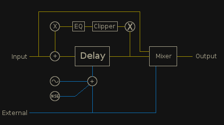
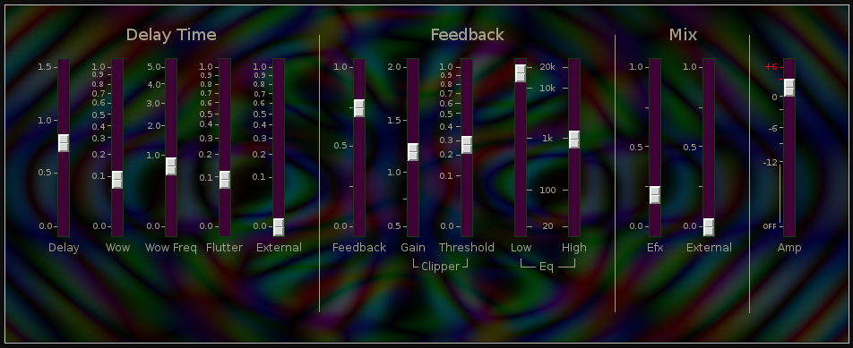

Carnaldelay

| Home | Contents | Synth Catalog | Previous: Bandpass | Next: Chronos Delay |
Delay with unclean feedback
 Delay Time
Delay time may be modulated by internal LFO, noise source or external signal, and has a maximum time of 1.5 seconds.
- Delay - Delay time
- Wow - Time modulation depth from LFO
- WowFreq - LFO frequency
- Flutter - Time modulation by brown noise source
- External - Time modulation by external source
Feedback:
The feedback path includes a clipping circuit and an eq.- Gain - Gain factor applied before clipper
- Threshold - Clipper threshold. Output of clipper will not exceed threshold
- EQ Low - Feedback lowpass filter cutoff
- EQ High - Feedback highpass filter cutoff
Mix
- Efx - Wet signal mix.
- External - External control over wet signal mix.
Buses:
- inbus - audio input
- outbus - audio output
- efxbus - control input for effects level
- dlybus - control input for delay time
Parameters
- delayTime - Delay time (0 ... 1.5)
- wow - LFO to delay time modulation (0 ... 1)
- wowFreq - LFO frequency (0 ... 5)
- flutter - Noise to delay time modulation (0 ... 1)
- xDelayMod - External signal to delay time modulation (0 ... 1)
- feedback - Feedback (-1 ... +1)
- gain - Feedback pre-clipper gain (0.5 ... 2.0)
- threshold - Feedback clipper threshold (0 ... 1)
- lowcut - Feedback lowpass filter cutoff (20 ... 20k)
- highcut - Feedback highpass filter cutoff (20 ... 20k)
- efxMix - Wet signal mix (0,1)
- xEfxMix - External signal to wet signal mix (0 ... 1)
- amp - Main amplitude (0 ... 2)
| Home | Contents | Synth Catalog | Previous: Bandpass | Next: Chronos Delay |